| Cloudflare는 보안·네트워크 인프라를 함께 제공하는 “인프라 플랫폼”에 가깝고, Netlify는 프런트엔드 배포 및 JAMstack 개발자 경험에 초점을 둡니다. Cloudflare는 대역폭이 무제한이고, Netlify는 무료일때는 대역폭이 100G까지 제한 사용 가능합니다. Cloudflare 가입과 사용법에 대해서 알아 본후, 배포를 어떻게 하는지 알아 보겠습니다. 배포는 드래그로 파일 올려서 배포 하기, github로 배포하는 방법에 대해서 알아 보겠습니다. cloudeflare 홈페이지 https://www.cloudflare.com/ko-kr/ 가입하기 https://pages.cloudflare.com/ 1. 가입하기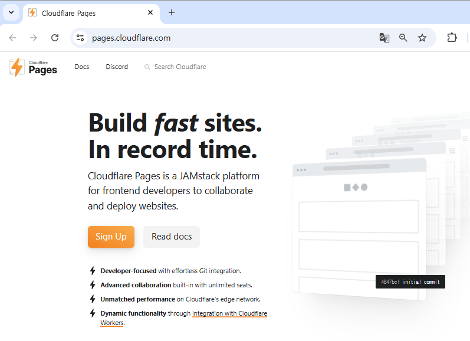 2 Workers & Pages오른쪽 메뉴에서 워커스 앤 페이지를 선택 합니다.3. "Create application" 버튼을 클릭하여 Worker를 만듭니다.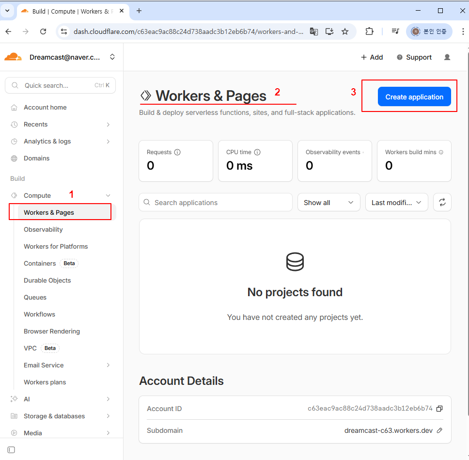 4. "Get started" 클릭"Get started" 위에 있는 다른 옵션을 선택하면 비용이 많이 든다고 하네요.저는 "Get started"를 선택합니다. 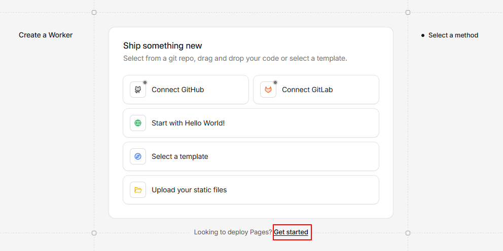 5. Drag and drop your files 선택"Drag and drop your files"을 선택하여 파일들을 드래그 하도록 하겠습니다.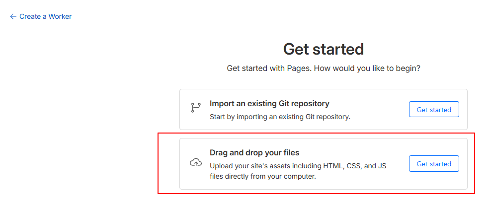 6. create project 버튼 클릭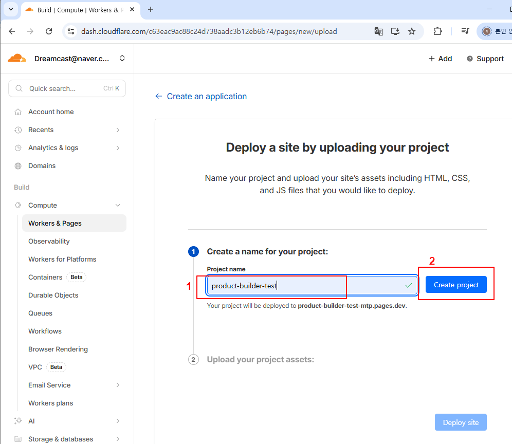 7 Drag folder로 파일 올리기폴더 이름을 아무거나 (여기서는 새폴더) 만들고 올리 파일을 넣은후 폴더를 드래그 합니다.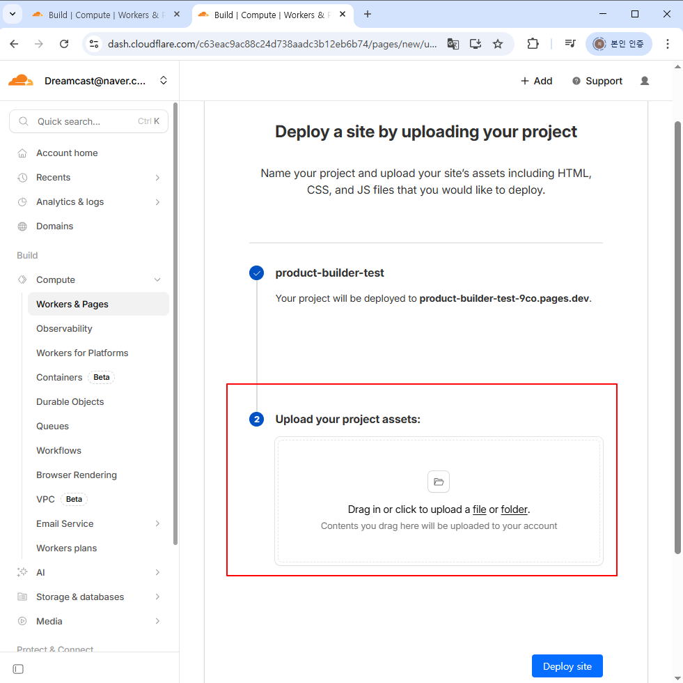 8. Deploy 버튼을 클릭하여 배포하기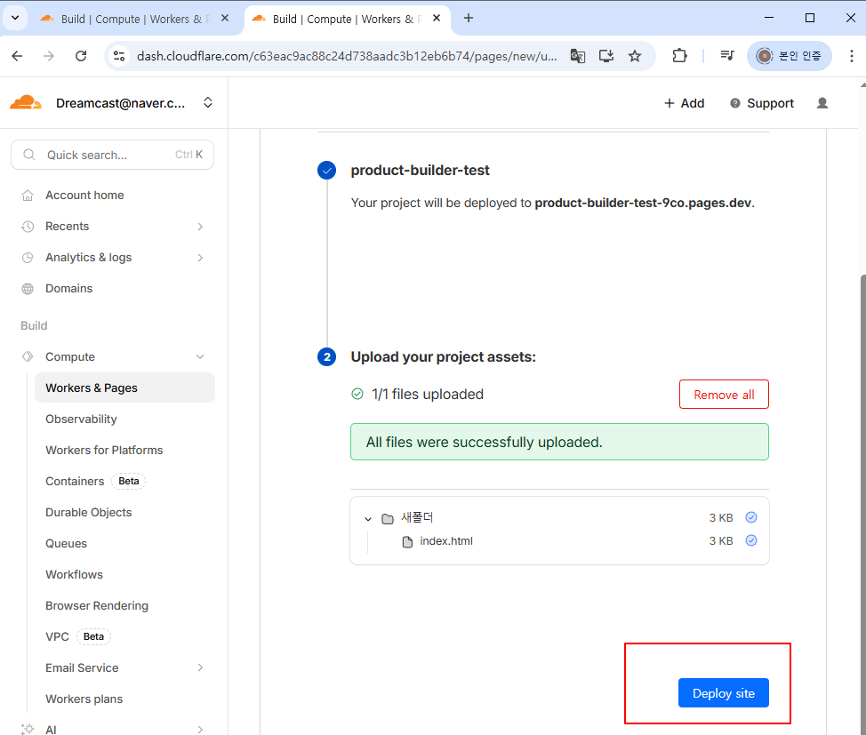 9. 배포 주소로 확인하기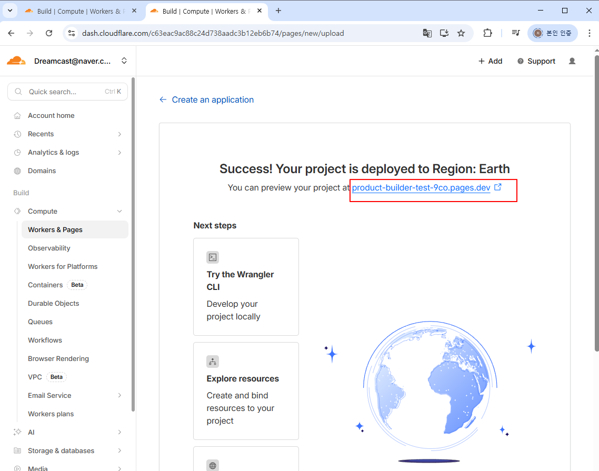 여기서는 git을 통한 배포에 대해서 알아 보겠습니다.7(git) Import an existing Get repository 선택해서 배포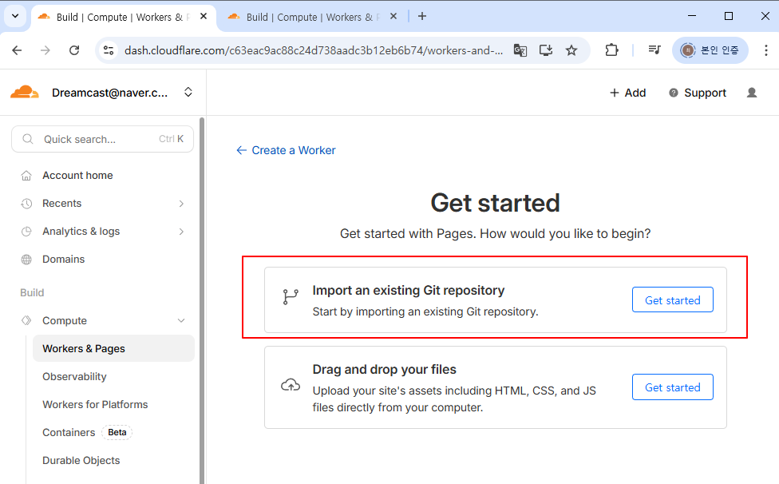 8. 진행중 설치하다 문세 있으면 아래 링크에서 제거한다.https://github.com/settings/installationsInstalled GitHub Apps와 Authorized GitHub Apps에서 "Cloudflare Workers and Pages" 관련 된 사항을 제거한다. 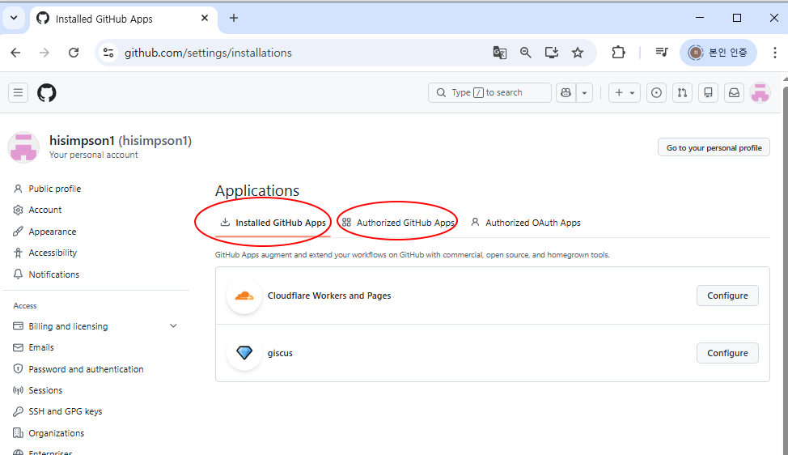 9. 모든 저장소 참조를 선택 합니다.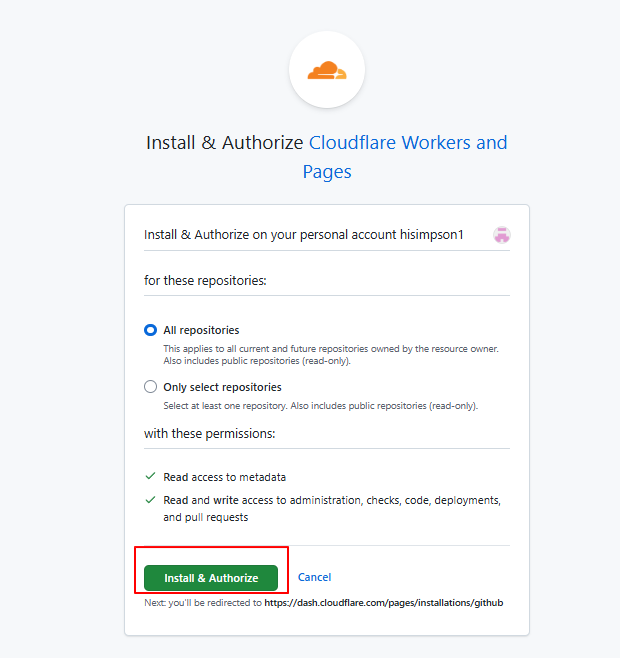 10. 모바일로 github 인증을 합니다.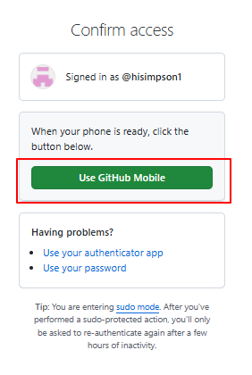 11. github 저장소 선택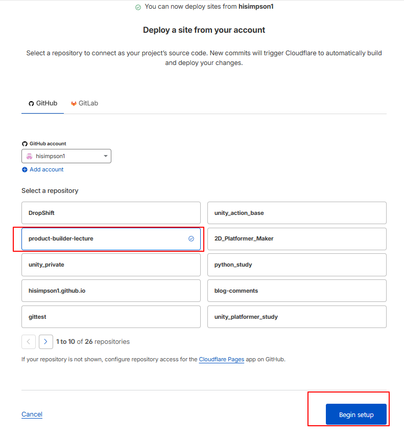 12. builds and deployments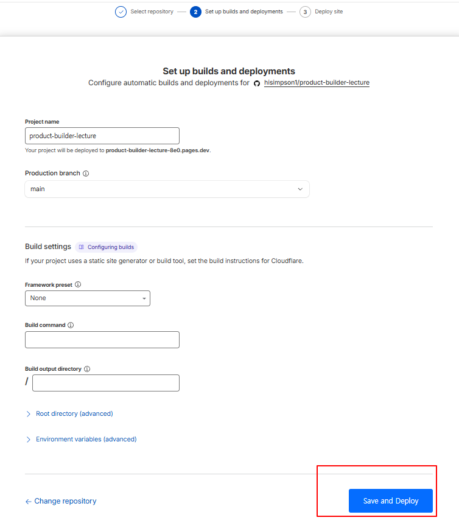 13. 결과화면 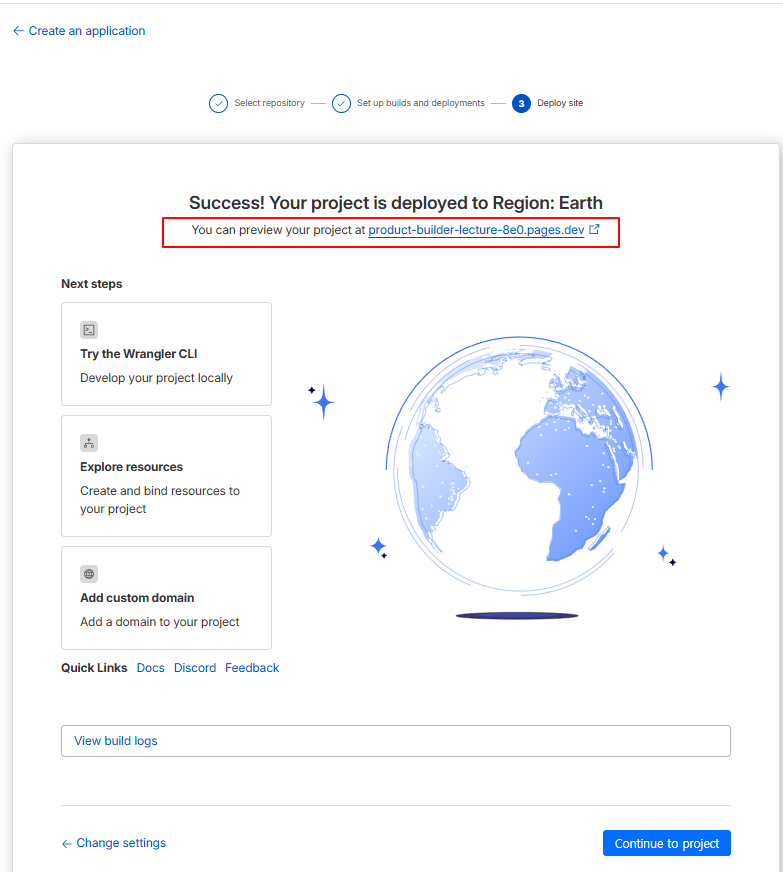 참고) claudeflare 사용법 https://www.youtube.com/watch?v=77ZT6H1Kpa8 바이브 코딩 기초, 수익형 웹 사이트 만들고 돈 벌기 https://www.youtube.com/watch?v=wUFtsYHQOpI |